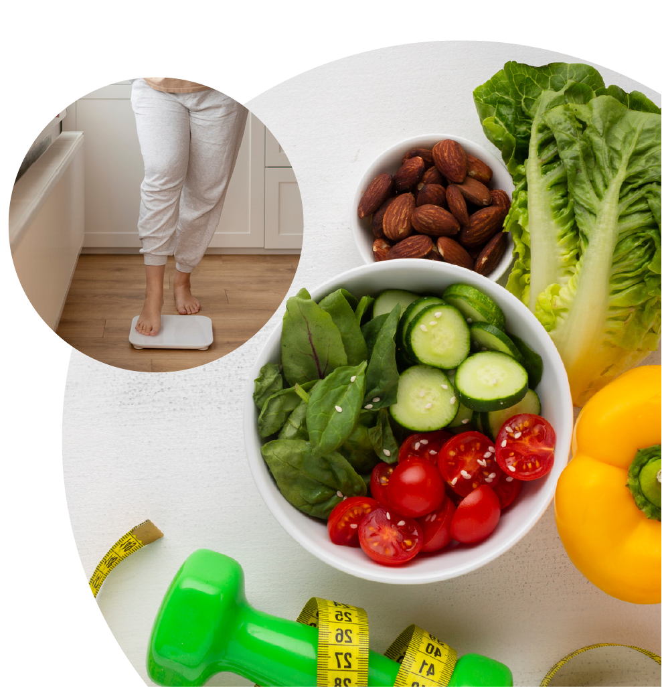

Cálculo de IMC
IMC é a sigla para Índice de Massa Corpórea, parâmetro adotado pela Organização Mundial de Saúde para calcular o peso ideal de cada pessoa.
O índice é calculado da seguinte maneira: divide-se o peso do paciente pela sua altura elevada ao quadrado. Diz-se que o indivíduo tem peso normal quando o resultado do IMC está entre 18,5 e 24,9.
Quer descobrir seu IMC? Insira seu peso e sua altura nos campos abaixo e compare com os índices da tabela. Importante: siga os exemplos e use pontos como separadores.
Altura (ex.: 1,70)
Peso (ex.: 69,2)
RESULTADO DO SEU IMC:
| Veja a interpretação do IMC | ||
| IMC | Classificação | Obesidade (grau) |
| Menor que 18,5 | Magreza | 0 |
| Entre 18,5 e 24,9 | Normal | 0 |
| Entre 25,0 e 29,9 | Sobrepeso | I |
| Entre 30,0 e 39,9 | Obesidade | II |
| Maior que 40,0 | Obesidade Grave | III |
